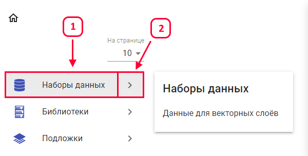
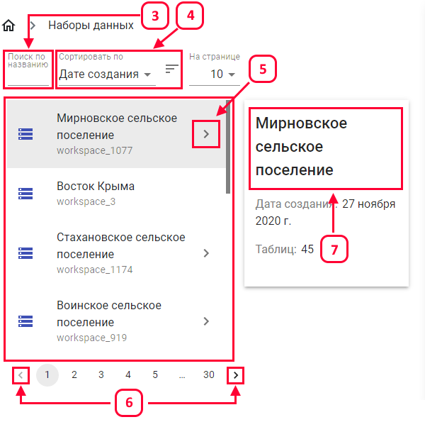
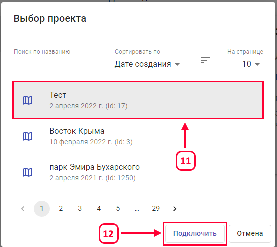

Для перехода в раздел управления наборов данных, требуется в появившимся окне выбрать «Наборы данных» (1) и нажать «Кнопку перехода в раздел» (2):

В разделе «Наборы данных» представлен список всех наборов данных. Для удобства поиска и сортировки можно воспользоваться инструментами «Поиск по названию» (3) и «Сортировка» (4). Для того, чтобы перейти в требуемый набор данных, нужно нажать на стрелочку (5). Перелистывание можно осуществлять с помощью стрелок вправо и влево (6). В правом верхнем углу отображается название выбранного набора данных (7).

В правой панели доступны разрешения для слоя (8). Для удаления слоя из набора данных, требуется нажать кнопку «Удалить» (9). Для подключения слоя в проект, требуется нажать кнопку «Подключения в проект» (10), в появившимся окне, следует выбрать проект (11) и нажать кнопку «Подключить» (12).

*Страница “Управление данными” доступна только для администратора.